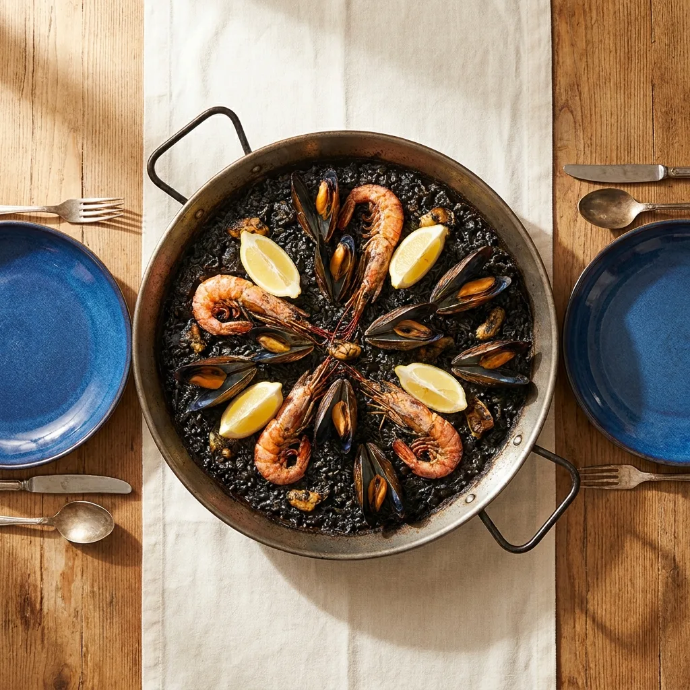
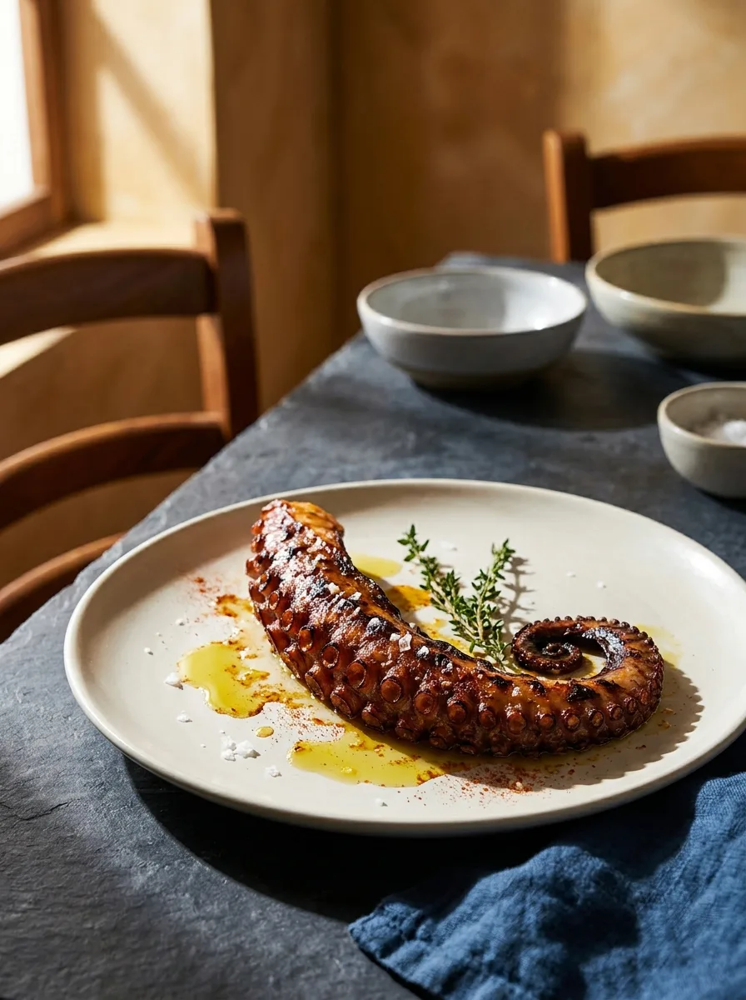
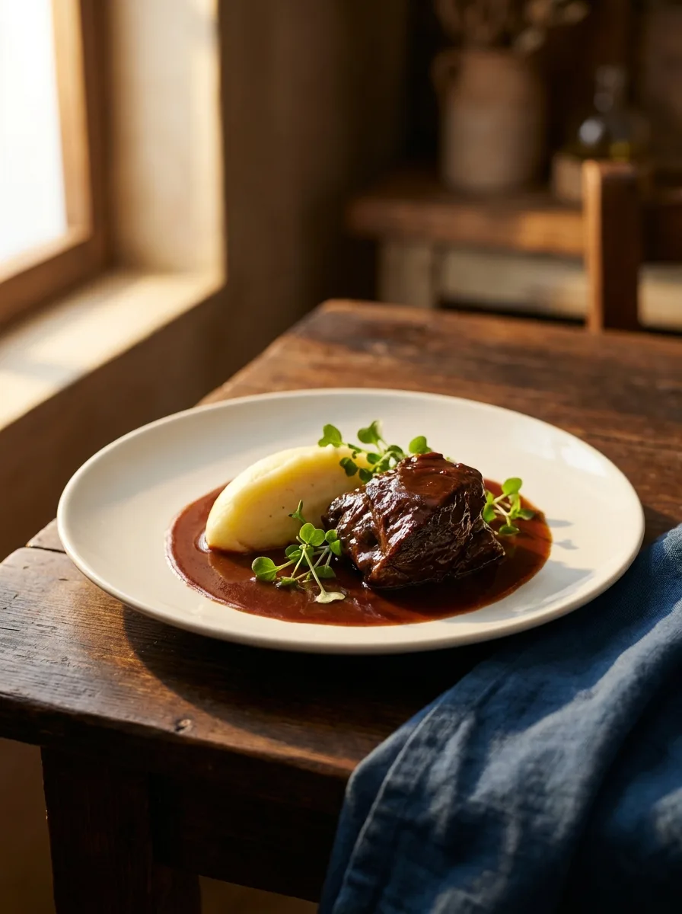

Pan con alioli de la casa
— consultarAlioli emulsionado a mano, pan tostado.
Mediterráneo, Bélgica
y un curry, una sola mesa.
— Carta · Edición 2026
La casa
Arroces alicantinos y pescados de mercado conviven con coquilles al azafrán, pollo a la mostaza, kaastaart y un korma de langostino. Mediterráneo, Bélgica y un guiño del sur asiático en la misma mesa.
La historia y el equipo se definen con vosotros antes de imprimir la carta final.
Capítulo I
De la cocina mediterránea, con algún guiño del norte.
Alioli emulsionado a mano, pan tostado.
Bechamel densa, hechas en la casa cada servicio.
Anillas rebozadas en su punto, mayonesa de la casa.
Atún cortado a cuchillo, aderezo cítrico. “Buenísimo” — reseña Tripadvisor.
Huevo cuajado en su punto, jamón y champiñones salteados.
Lechuga, tomate, manzana, pepino y aguacate.
Carta más amplia con ensaladilla rusa, chopitos crujientes, queso y jamón, ensalada César y tataki de atún — pregunta en sala.

Capítulo II · El fuego lento
Cocidos al momento. Mínimo 25 min de espera.
Marisco pelado, fondo de pescado y azafrán. Tradición valenciana sin manchar las manos. Mínimo dos personas.
— Recomendado · ancla de cartaTinta de calamar, sepia y marisco. Allioli aparte.
Carne y marisco en la misma cazuela. Clásico de la casa para mesa larga.
Bogavante entero sobre arroz meloso con caldo de marisco.
Pasta corta dorada al estilo arroz, fondo de pescado y marisco. “Increíble” — reseña Tripadvisor.
También paella de pollo y verduras, paella de pollo, arroz negro de carta — consultar en sala.
Una de las destacadas
Pieza entera del día, costra de sal gruesa, horno fuerte. Se abre en mesa y se rocía con aceite de oliva.
La mejor lubina al horno de sal que he probado en Calpe en veinte años. — Reseña Tripadvisor (anónima)
Precio según pieza · Sugerencia para 2 personas
Capítulo III
Pescado y marisco. Producto del mercado y un guiño belga.
Tentáculo a la parrilla, pimentón de la Vera, aceite virgen.
— De la casaVieiras con gambas y salsa de azafrán. Clásico del recetario belga. “Una delicia” — reseña Tripadvisor.
— Plato fusiónPieza entera al horno, según mercado.
Sepia limpia a la plancha con verduras de temporada.
Lomo de salmón, tagliatelle fresca, salsa de azafrán.

Capítulo IV
Cortes seleccionados, sal gruesa, brasa viva. Y un par de recetas belgas.
Mejilla de ternera braseada lentamente. Se deshace en el tenedor.
— De la casaPieza del lomo bajo, sal en escamas. Punto a elegir.
Solomillo sellado, salsa cremosa de pimienta verde.
Pechuga sellada con salsa cremosa de mostaza. Uno de los platos más reconocibles del recetario belga.
— Plato fusiónPieza al horno con guarnición de la casa.
También filete de cerdo y otros cortes — consultar en sala.

Capítulo V · Una nota oriental
Una única receta del sur asiático en la carta. Y va en serio.
Curry suave de inspiración india, leche de coco y especias. El langostino se cuece en la propia salsa.
— Plato fusiónCapítulo VI
Postres de la casa. Algunos llegan del norte.
Cremosa por dentro, dorada por fuera. El postre que pide repetir.
— De la casaTarta de queso de tradición flamenca: más densa, menos dulce, base de bizcocho fino.
— Plato fusiónCrema con costra caramelizada al momento.
Bocaditos rellenos de helado, chocolate caliente al servir.
Sorbete con un punto de ron y hierbabuena.
También carpaccio de piña con helado y postre helado del día — consultar en sala.
Capítulo VII
Menú del día, sangría casera, vino de la casa.
Disponible al mediodía. Cambia según producto del día. Pregunta en sala.
— De lunes a viernesVino tinto, frutas de temporada, un punto de licor.
Tinto, blanco o rosado. Selección breve y bien medida.